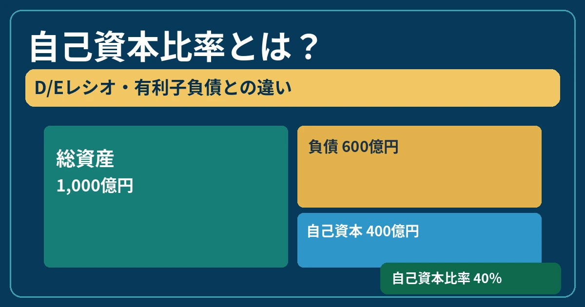

株式投資・企業分析
自己資本比率とは？D/Eレシオ・有利子負債との違いと企業の財務健全性の見方を初心者向けに解説
企業の借金は多いほど危険なのでしょうか。自己資本比率・D/Eレシオ・有利子負債を、架空企業の数字と決算書の見方から整理します。

この記事の目次
自己資本比率とは？
自己資本比率は、企業の総資産に占める自己資本の割合です。企業がどの程度、返済義務のない資本を基盤として事業を運営しているかを知る手掛かりになります。
自己資本比率（％）＝自己資本 ÷ 総資産 × 100
自己資本と純資産は同じではない
純資産には、非支配株主持分や新株予約権など、自己資本の計算から除外される項目が含まれる場合があります。日本基準の連結財務諸表では一般に「純資産−非支配株主持分−新株予約権」などを自己資本として扱います。IFRSでは親会社の所有者に帰属する持分を用いることがあります。会計基準と開示資料の定義を確認しましょう。
貸借対照表（B/S）の基本構造
貸借対照表は、ある時点の資産と、その調達源泉である負債・純資産を表します。
資産＝負債＋純資産
1,000億円
600億円
400億円
この架空例では自己資本と純資産が一致すると仮定します。自己資本比率は400÷1,000×100＝40％です。負債600億円のすべてが有利子負債という意味ではありません。
自己資本比率・D/Eレシオ・有利子負債の違い
| 指標 | 計算・意味 | 主な用途 |
|---|---|---|
| 自己資本比率 | 自己資本÷総資産×100 | 財務構造の安定性 |
| D/Eレシオ | 有利子負債÷自己資本（倍） | 借入依存度 |
| 有利子負債 | 借入金・社債などの合計 | 利息・返済負担の把握 |
| ネット有利子負債 | 有利子負債−現金等 | 手元資金を考慮した負債の把握 |
表は左右にスクロールできます。
D/Eレシオには総負債を分子とする定義もあります。また「現金等」に現金同等物・短期金融資産など何を含めるかは企業によって異なります。同じ定義で比較することが重要です。
D/Eレシオの計算例
架空企業の有利子負債300億円、自己資本400億円とします。
D/Eレシオ＝300億円÷400億円＝0.75倍
数値が高いほど有利子負債への依存度が高い可能性があります。ただし業種・事業モデル・資金調達慣行で適切な水準は異なり、一律の安全基準はありません。自己資本が小さい・マイナスの場合は比率の解釈にも注意が必要です。
自己資本比率が高い企業は安全？
一般には負債への依存度が低く、損失を吸収する余地が比較的大きい可能性があります。ただし自己資本比率は手元の現金額を示しません。売掛金の回収遅延、赤字や営業キャッシュフローの悪化、資産評価の変動があれば財務状況は変わります。
銀行などの金融業、不動産業、設備投資が大きい事業では財務構造が異なります。成長投資のために負債を活用することもあり、高い自己資本比率は倒産しない保証ではありません。
有利子負債とは？
有利子負債は、一般に利息や金融費用を伴う借入金・社債などです。仕入代金の未払いである買掛金などの通常の営業債務とは区別します。
リース負債を含めるかどうかは会計基準・企業の算定方針によって異なります。総負債には買掛金や引当金なども含まれるため、総負債＝有利子負債ではありません。
有利子負債が多い企業は危険？
借入によって設備投資や事業拡大を行い、収益を生む企業もあります。負債の絶対額より、営業利益・営業キャッシュフロー・フリーキャッシュフロー・利息負担・返済期限・現金及び預金を併せて確認しましょう。
変動金利借入や借り換え時には、金利上昇によって支払利息が増える場合があります。固定金利借入では直ちに負担が増えるとは限りません。
ネットキャッシュ・ネット有利子負債とは？
有利子負債から現金等を差し引いたものがネット有利子負債です。
有利子負債300億円−現金等200億円＝ネット有利子負債100億円
現金等が有利子負債を上回る場合は「ネットキャッシュ」と呼ばれることがあります。ただし拘束性のある資金や運転資金などもあり、手元資金をすべて返済に充てられるとは限りません。
借金返済能力をどう確認する？
| 指標 | 代表的な計算式 | 読み方・注意点 |
|---|---|---|
| インタレスト・カバレッジ・レシオ | （営業利益＋受取利息・配当金など）÷支払利息など | 利息負担を利益でどれほど賄えるか。分子・分母の定義は要確認 |
| ネットD/Eレシオ | ネット有利子負債÷自己資本 | 手元資金を考慮した実質的な借入依存度 |
| ネット有利子負債／EBITDA倍率 | ネット有利子負債÷EBITDA | 利益創出力に対する負債の規模。返済年数そのものではない |
表は左右にスクロールできます。
EBITDAは営業利益に減価償却費等を加える算出方法が代表的ですが、企業によって調整項目や定義が異なります。赤字や一時的な損益がある場合、倍率の解釈には特に注意が必要です。これらの指標も安全性を保証しません。
ROE・ROICとの関係
ROEは自己資本に対する利益の割合です。借入を活用したり自己資本が減少したりすると、利益が同じでもROEが上昇する場合があります。ROEが高い理由を確認することが大切です。
ROICは投下資本に対する利益の効率を測る指標で、自己資本比率やD/Eレシオとは異なる側面を示します。関連する「ROICとは？ROE・ROAとの違い」の記事は、提供資料でURLを確定できなかったため未リンクとしています。
フリーキャッシュフローとの関係
利益が出ていても現金回収が遅れたり設備投資が大きかったりすると、返済に利用できる資金が十分でない場合があります。フリーキャッシュフローとは？では利益と現金の違いを解説しています。
ただしFCFが一時的にマイナスでも、投資の先行や十分な現預金・資金調達余力があれば直ちに返済不能になるわけではありません。
決算書ではどこを確認する？
| 書類 | 主な確認項目 | 分かること |
|---|---|---|
| 貸借対照表（B/S） | 総資産・負債・純資産・現預金 | 財務構造と手元資金 |
| 損益計算書（P/L） | 営業利益・支払利息 | 収益力と利息負担 |
| キャッシュフロー計算書（C/F） | 営業CF・投資CF・財務CF | 現金の増減と資金調達・返済 |
表は左右にスクロールできます。
決算発表とは？で開示の流れを確認し、決算短信・有価証券報告書・決算説明資料を参照します。利益の読み方は営業利益・経常利益・純利益の違いも参考になります。借入金の内訳、注記、満期情報も確認しましょう。
財務健全性チェックリスト
- 自己資本比率は数年間でどう推移しているか
- D/Eレシオは上昇していないか
- 有利子負債が急増していないか
- 手元資金は十分か
- 営業キャッシュフローは安定しているか
- 利息負担が利益を圧迫していないか
- 借入金の返済期限が集中していないか
- 同業他社と比較してどうか
- 一時的な要因による数値変化ではないか
チェックは合否判定ではなく、決算書を読み進めるための確認事項です。
よくある質問（FAQ）
自己資本比率とは何ですか？
総資産に占める自己資本の割合です。自己資本÷総資産×100で計算します。
自己資本比率は何％あれば安全ですか？
全業種に共通する安全な数値はありません。業種や収益力、資金繰りと併せて判断します。
自己資本と純資産は同じですか？
必ずしも同じではありません。連結決算では非支配株主持分などを区別します。
D/Eレシオとは何ですか？
一般に有利子負債を自己資本で割った比率です。総負債を使う定義もあるため確認が必要です。
D/Eレシオは低いほど良いですか？
低いほど借入依存度が小さい傾向ですが、投資戦略や事業特性によって評価は異なります。
有利子負債とは何ですか？
借入金や社債など、一般に利息・金融費用を伴う負債です。
有利子負債が多い企業は危険ですか？
負債額だけでは判断できません。収益力・現金創出力・返済期限・金利条件を確認します。
ネットキャッシュとは何ですか？
一般に現金等が有利子負債を上回る状態です。現金等の範囲は企業ごとの定義に注意します。
自己資本比率とROEはどう関係しますか？
借入活用や自己資本の減少によってROEが上がる場合があります。両方を確認することが重要です。
まとめ
自己資本比率は総資産に対する自己資本の割合、D/Eレシオは借入依存度、有利子負債は利息・返済負担の規模を捉える指標です。ネット有利子負債は手元資金も考慮します。
企業の財務健全性は一つの数字で決めず、収益力・現金創出力・返済期限・金利条件・業種特性を総合的に確認しましょう。
記事専用のリンク画像

ご利用にあたっての注意事項
本記事は初心者向けの金融教育を目的とした一般情報です。特定銘柄の売買を推奨するものではありません。会計基準や各社の定義により計算・表示が異なる場合があります。投資判断は最新の一次情報を確認し、ご自身の判断と責任で行ってください。